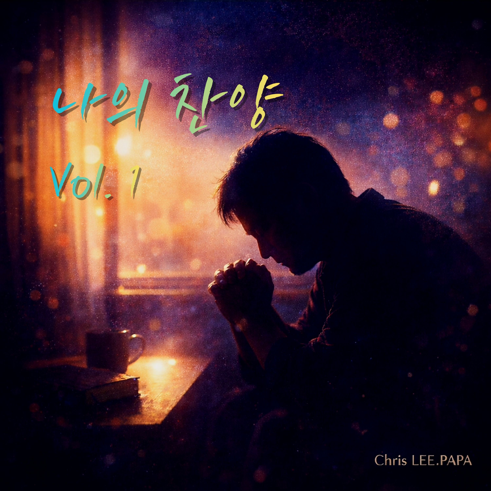

WORSHIP ARCHIVE
나의 찬양, 그리고 우리의 예배
음악을 통해 하나님께 올려드린 고백과 찬양을 한곳에 기록합니다. 기존 작품은 그대로 보존하고 새로운 예배의 노래를 계속 추가합니다.


✦ STREAMING ARCHIVE
Spotify는 각 작품의 실제 앨범 페이지로 연결합니다. YouTube는 현재 제공된 공식 Chris LEE.PAPA 채널을 사용합니다.
영혼 깊은 곳에서 올려드리는 고백과 찬양
음악을 통해 하나님께 올려드린 고백과 찬양을 한곳에 기록합니다. 기존 작품은 그대로 보존하고 새로운 예배의 노래를 계속 추가합니다.

Spotify는 각 작품의 실제 앨범 페이지로 연결합니다. YouTube는 현재 제공된 공식 Chris LEE.PAPA 채널을 사용합니다.